创作者攻略：从"通用 AI 写手"到"专属编辑助理"
本章为进阶教程，如需了解基础操作方式，请前往 WorkBuddy × ima 功能指引 和 如何用 WorkBuddy 把 ima 知识库越用越厚。
很多人在用 AI 写文章时，常遇到一个问题：内容结构完整，句子也通顺，但读起来不像自己的表达。
更烦的是：选题全靠灵感、热点总是慢半拍、配图得另外找。
这篇文章将帮助你，用 WorkBuddy × ima 一次性解决这些问题：
- 自动化每天帮你抓热点、出简报，不用手动刷资讯
- ima 让 WorkBuddy 从"通用写手"变成"读过你所有资料的专属编辑"
- 专家团让创作不再痛苦，配图、视频、排版一站式搞定
- 每次创作沉淀回 ima，越用越懂你
一、选题和方向，比动笔更重要
创作者每天都会接触大量行业新闻、热门话题和优秀内容。
如果只是随手收藏，这些资料很快就会散落在不同平台；真正准备创作时，依然不知道该写什么。
用 ima 建立作品与素材库
先在 ima 建一个知识库，保存与创作相关的资料，如：
| 资料类型 | 示例 | 用途 |
|---|---|---|
| 选题相关资料 | 行业报告、官方信息、新闻动态、数据案例 | 了解选题背景，为文章提供事实依据 |
| 优质参考作品 | 好文章、优秀视频链接、标题或结构案例 | 参考选题角度、内容结构和表达方式 |
| 个人作品与素材 | 已发布作品、历史草稿、采访记录、个人案例 | 避免重复选题，提炼个人风格并复用已有内容 |
这些内容将成为后续 WorkBuddy 了解你的账号内容的重要资料。
让选题每天主动找上门
除了手动积累，还可以在 WorkBuddy 中创建自动化任务，每天定时搜索行业动态，并生成选题简报。
早上打开 WorkBuddy 时，就可以观看今天最新的动态与选题，让灵感源源不断。
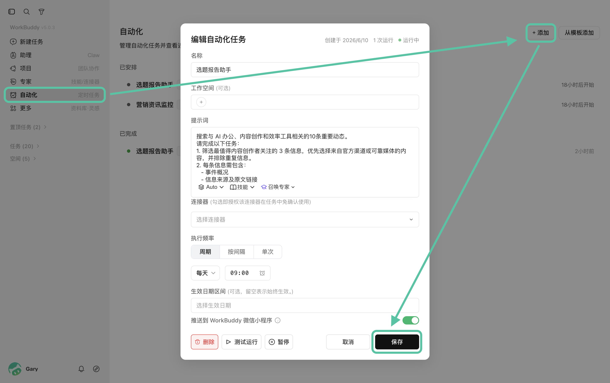
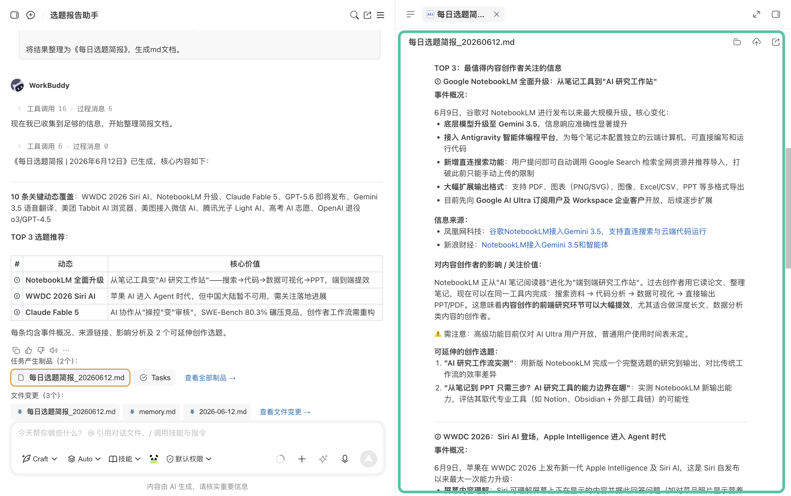
打开下方推送至 WorkBuddy 微信小程序，还可以在手机上查看推送内容。
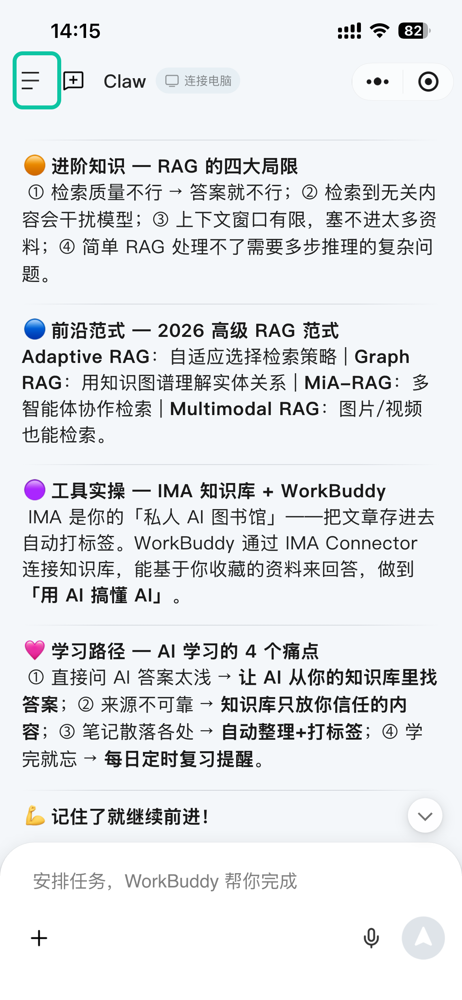
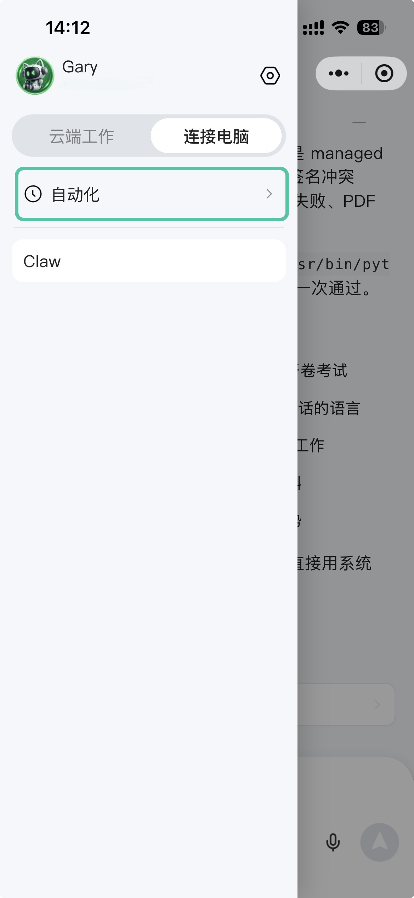
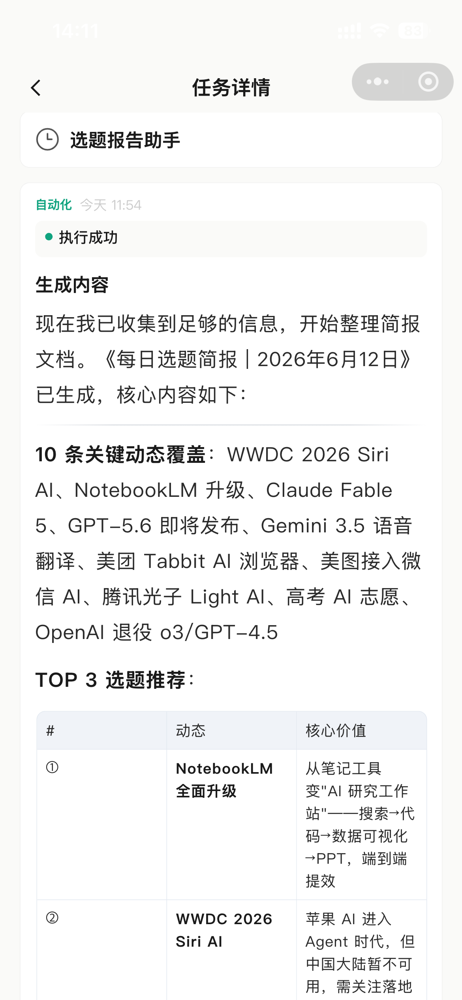
二、用 WorkBuddy × ima 提炼创作风格画像
有了选题和素材，还需要解决：怎样让 AI 写得更像自己？
仅仅给出一两个作品并要求"模仿我的文风"，通常只能得到一些表面相似的表达。每次生成时都让 WorkBuddy 读一遍 ima 中的过往作品，又太消耗积分。
更稳定的方式，是先让 WorkBuddy 基于 ima 中的过往作品，提炼一份可重复调用的创作风格画像。
在 WorkBuddy 中进入 ima 知识库，选择对应文章添加到任务，并参考下方提示词进行操作：
请基于我选择的 ima 过往公众号文章，帮我整理一份创作风格画像，产出一份"创作风格画像"，产物格式应适合保存回 ima。重点总结选题角度、标题与开头、文章结构、论证方式、句式节奏和常用表达。不要只使用"专业、自然"等笼统形容词，请整理成一份能够直接指导后续写作的创作风格画像。
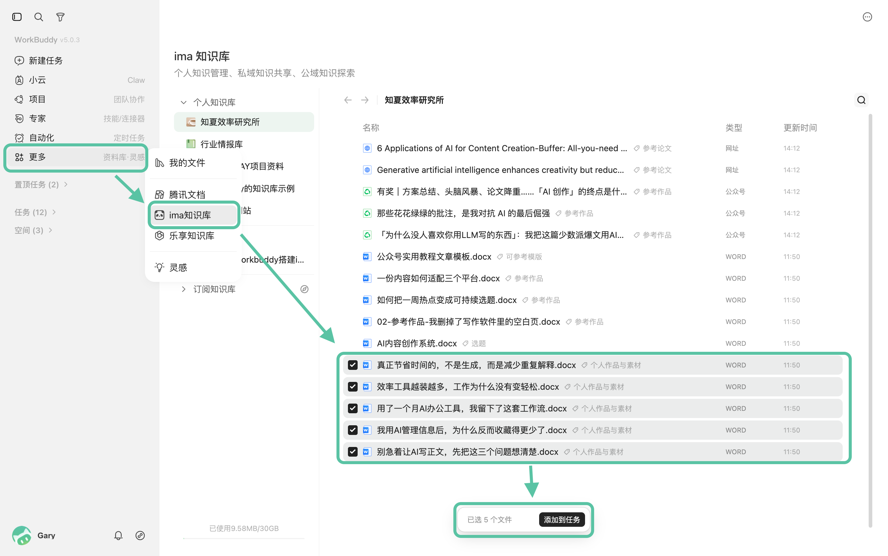
WorkBuddy 将产出一份创作风格画像，可以将其保存回 ima，作为后续生成的参考。
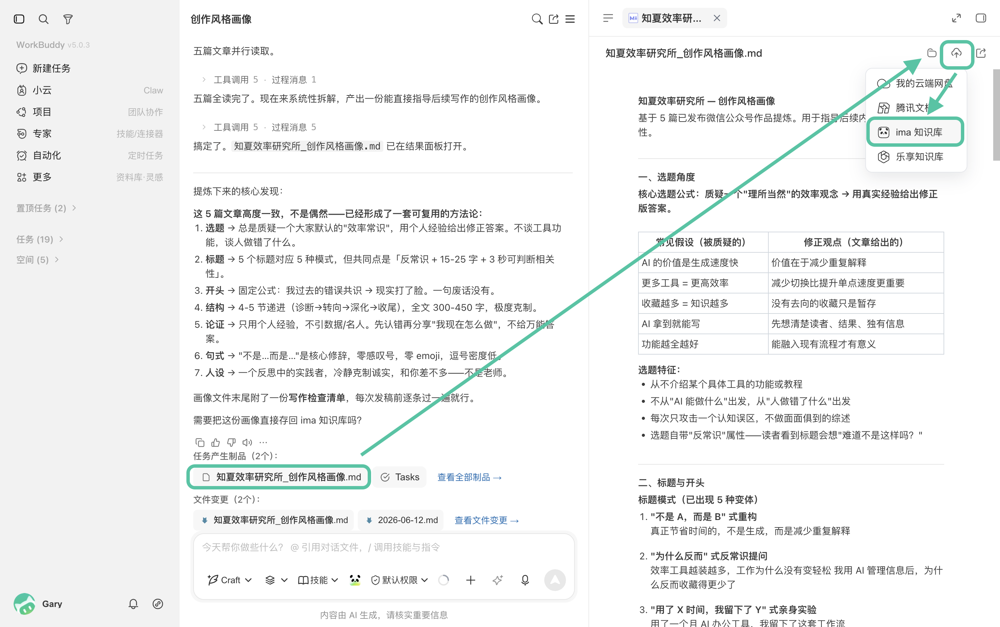
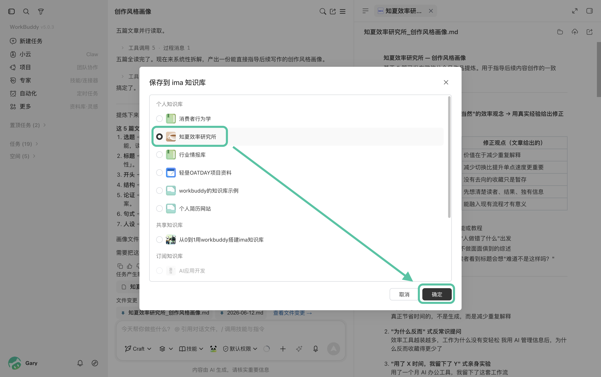
三、专家团一站式完成内容创作
对创作者来说，真正消耗精力的往往不只是写正文，而是内容生产被分散在多个平台：
先查找资料，再切换不同工具生成文案、制作配图和视频，并将文案改编成适配不同平台的版本。
每进入一个新环节，都要重新复制素材、补充背景并说明创作要求。
WorkBuddy × ima 可以把原本分散的环节串联起来，完成包括图片、视频、排版等在内的多类型产出。
- 开始任务时，只需在提示词中明确需要读取的知识库名称，需要参考哪些资料、最终产出类型，以及你关于本次创作的其他想法。
- 专家团便会基于选题资料理解内容背景，参考个人作品和创作风格画像确定表达方式，再根据最终产物要求安排成员协作。
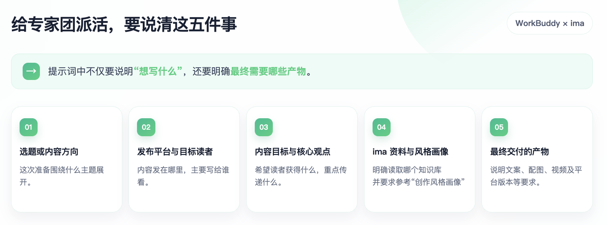
请结合 ima 中"知夏效率研究所"的选题资料和创作风格画像，完成一期关于"如何利用 WorkBuddy × ima 建立长期内容创作系统"的内容策划与制作。
目标读者： 已经使用 AI 写作，但输出风格不稳定、资料比较分散的内容创作者。
内容目标： 帮助读者理解，AI 不应只参与单次写作，还可以参与素材积累、选题、创作和内容沉淀。请参考创作风格画像，但不要机械模仿，也不要补充没有可靠来源的数据。
请交付以下产物：
- 3 个公众号标题方案
- 1 篇完整的公众号文章
- 3 张文章配图
- 1 份小红书图文版本
- 1 份 60 秒短视频口播脚本
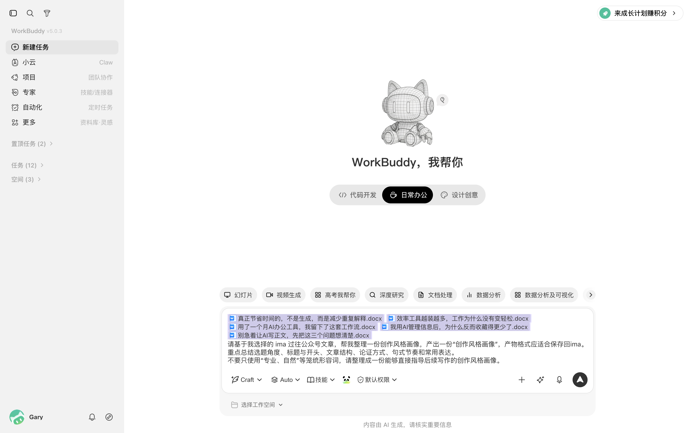
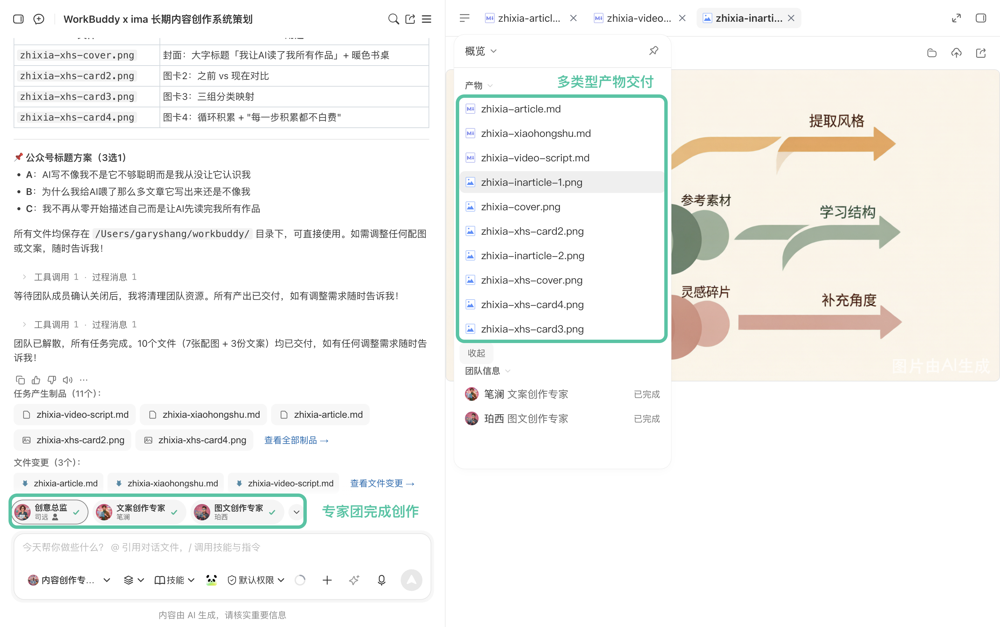
最终产出确认后，可以再将其一键回存至 ima。
WorkBuddy 下一次策划选题时，就能根据知识库判断哪些主题已经写过、哪些观点可以继续延伸，也能参考最新作品调整创作风格。
对于已完成认证的微信公众号创作者，还可以通过技能将内容直接推送至后台草稿箱中（首次使用需配置 WeChat API 凭证，按 WorkBuddy 反馈进行配置即可）。
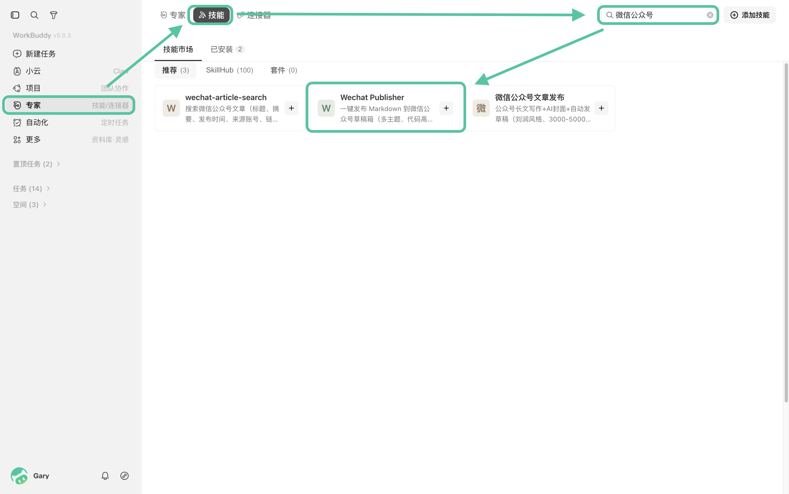
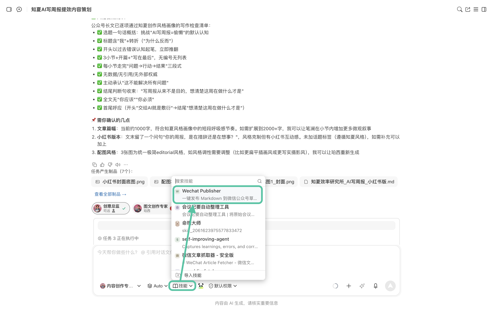
四、从一次生成，到长期创作
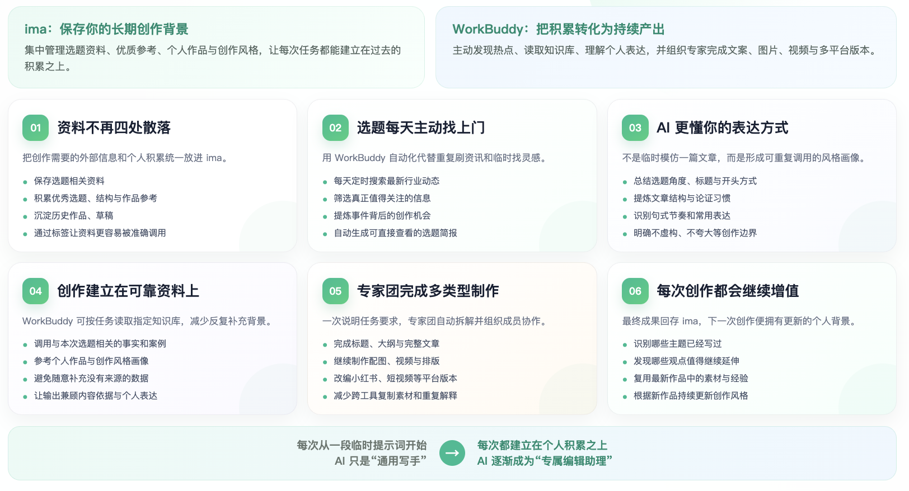
WorkBuddy × ima 的价值，不只是更快地生成一篇文章，而是让每次创作都能延续过去的积累。
当选题、素材、作品和创作经验不断沉淀回 ima，WorkBuddy 面对的便不再是一段孤立的提示词，而是一套可以持续调用和更新的个人创作背景。
它也会从每次都要重新认识你的"通用 AI 写手"，逐渐成为更了解你表达习惯与创作方式的专属编辑搭档。